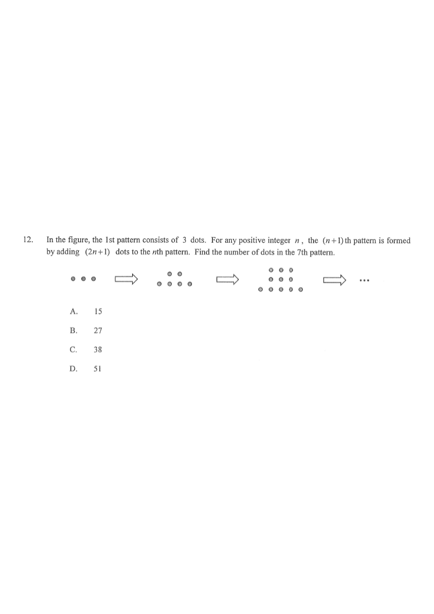

HKDSE 2020 Paper 2 · Q12 · 5. Formulas and Sequences
In the figure, the 1st pattern consists of 3 dots. For any positive integer $n$,
the $(n+1)$th pattern is formed by adding $(2n+1)$ dots to the $n$th pattern.
Find the number of dots in the 7th pattern.
A. 15
B. 27
C. 38
D. 51

Figure (original exam diagram)
1
Name the sequence.
Let $T(m)$ be the number of dots in the $m$th pattern.
Given: $T(1)=3$, and $T(n+1)=T(n)+(2n+1)$ for any positive integer $n$.
Write down what is given before computing — pattern 1 has 3 dots.
2
Unroll the recurrence.
$T(7)=T(6)+13$ (use $T(n+1)=T(n)+(2n+1)$ with $n=6$ because $2(6)+1=13$)
$=T(5)+11+13$ (with $n=5$)
$\quad\vdots$
Recurrence Relation\(T(n+1)=T(n)+(2n+1)\)Working back from \(T(7)\) adds the odd numbers \(13,11,9,7,5,3\) one at a time.
$=T(1)+3+5+7+9+11+13$ (with $n=1$)
Each step back adds the odd number $2n+1$ for that $n$.
3
Substitute $T(1)=3$ and add the odd numbers.
$T(7)=3+3+5+7+9+11+13$
$=3+(3+5+7+9+11+13)$
Sum of the First n Odd Numbers\(1+3+5+\cdots+(2n-1)=n^{2}\)\(3+5+\cdots+13=7^{2}-1=48\), so \(T(7)=3+48=51\).
$=3+48=51$
(since $3+5+7+9+11+13=48$)
Sum the added odd numbers first, then add the initial 3 dots.
4
Check with a formula.
$T(n)=3+[3+5+7+\cdots+(2n-1)]$ for $n\ge 2$.
The sum of the first $n$ odd numbers $1+3+5+\cdots+(2n-1)=n^2$, so
$T(n)=3+\left(n^2-1\right)=n^2+2$.
Closed Form of a Sequence\(T(n)=n^{2}+2\)Adding the initial \(3\) dots to \(n^{2}-1\) gives \(T(n)=n^{2}+2\), and \(T(7)=51\).
Thus $T(7)=7^2+2=49+2=51$.
The closed form $T(n)=n^2+2$ confirms the answer quickly.
Answer: D (51)
PRACTICESimilar question — try it yourself
Question. Let \(T(n)\) be the number of dots in the \(n\)th pattern of a sequence, where \(T(1)=4\) and \(T(n+1)=T(n)+(2n+3)\) for any positive integer \(n\). Find \(T(6)\).
Show the worked solution
Step 1. Unroll the recurrence: \(T(6)=T(1)+5+7+9+11+13\).
Step 2. Sum the added terms: \(5+7+9+11+13=45\).
Step 3. \(T(6)=4+45=49\).
Step 4. Check with a closed form: \(T(n)=4+\sum_{k=1}^{n-1}(2k+3)=4+(n-1)n+3(n-1)=n^{2}+2n+1=(n+1)^{2}\), so \(T(6)=7^{2}=49\) ✓.